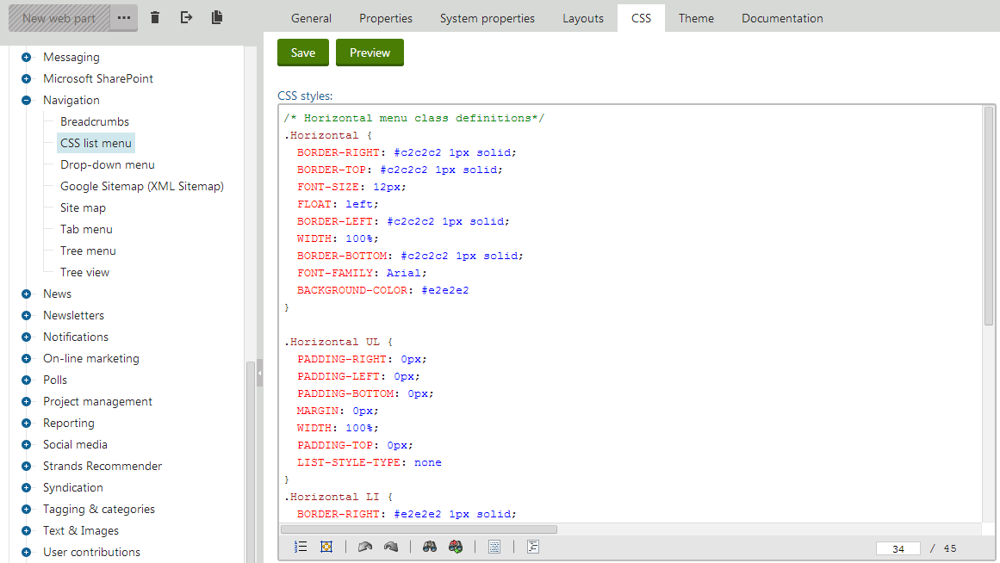
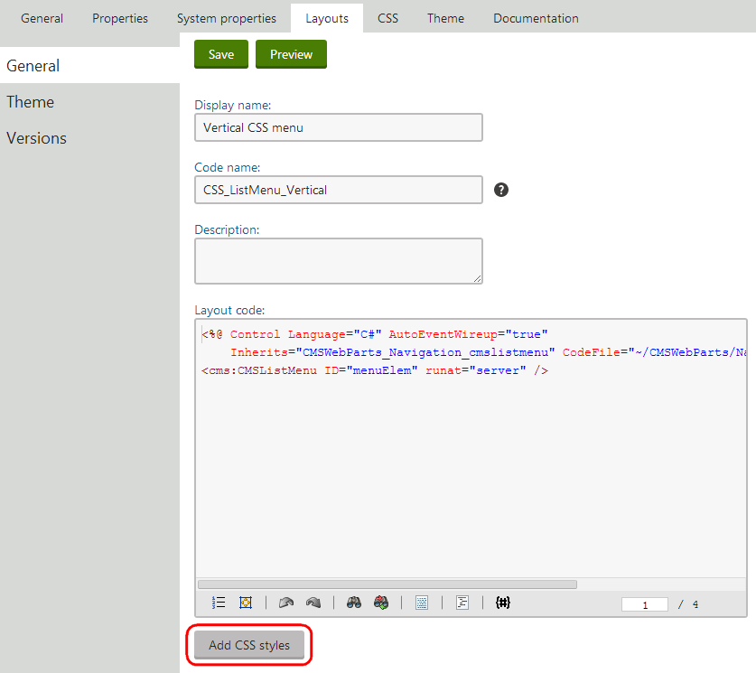

Adding CSS to page components
Not recommended
Component CSS is not a recommended approach for styling your website. Only use this approach for special scenarios, where styling your website in a stylesheet applied to the whole site wouldn't make sense. Keep in my mind that extensive website styling via individual page components can prove very difficult to maintain.
In addition to the main stylesheets that can be assigned to sites or individual pages, you can set CSS styles directly for various types of components that make up the content of pages:
Web parts – CSS styles can be added to a web part by editing it in the Web parts application on the CSS tab. The system automatically links the styles on pages containing the given web part.

Adding CSS styles to a web part
Web part layouts – to define styles for a specific Web part layout, open the Web parts application, select the web part in the tree and open the Layouts tab. Edit (
 ) the layout and click Add CSS styles below the layout code editor.
) the layout and click Add CSS styles below the layout code editor.

The CSS styles field appears, where you can add any required CSS classes. The system links the styles on all pages that contain a web part using the specific layout.
Web part containers – to manage the styles of Web part containers, open the Web part containers application, edit the given container and click Add CSS styles. The system links the styles on pages where the container is used.
Transformations – when editing the Transformation of a page type or custom table, you can define CSS styles by clicking Add CSS styles below the transformation code editor. The system links the styles on pages where the given transformation is used to display data (e.g. through a viewer web part).
Shared (pre‑defined) page layouts – CSS styles can be added to Page layouts in the Page layouts application, where the Add CSS styles button is available when editing a specific layout. Once the shared layout is assigned to a Page template, the system links the specified styles on all pages that use the given template.
Page layouts of specific page templates – in many cases, page templates use a custom page layout that is unique for the given template. To add CSS styles to such templates, open the Page templates application, select the template, switch to the Layout tab, and click Add CSS styles below the code of the custom layout.
Custom device layouts of specific page templates – page templates support the creation of custom page layouts for specific device profiles. To add CSS styles to device layouts, edit the template in the Page templates application, open the Device layouts tab, edit the device layout and click Add CSS styles below the code of the custom layout.
When a page is displayed in a user's browser, the system loads the assigned stylesheet and then requests any styles defined for the components used on the given page. The final stylesheet available for the page is a combination of the main stylesheet and all component styles. If any of the components contain an alternative definition for a CSS class that already exists in the main stylesheet, then the component style has a greater priority and overrides the original class.
By defining styles directly for components, you can reduce the size of your site (or page) stylesheets and organize them into more manageable sections. It also means that pages need to load less total CSS data, since each page only has to request styles for those components that are actually used on it.
Additionally, the styles of components are automatically exported and imported along with the corresponding objects, which makes it easier to deploy them to websites that use a different stylesheet. The disadvantage of this approach is that at least one additional resource request must be added to pages containing styled components to ensure that all required CSS code is loaded.
Configuring component CSS
The system provides global settings that affect the behavior of component CSS on all sites. You can configure the settings via the Settings application in the System -> Performance category (only available if you choose the (global) option in the Site selector).
The Allow CSS from components setting indicates if pages containing components automatically request the corresponding styles. The setting is enabled by default. If you disable the setting, you either need to define all styles directly in the main stylesheet, or link the styles of the required components into the stylesheet via CSS macros. Use the following macro expressions to link component styles into other stylesheets:
{% CSS.WebParts["<web part code name>"] %}
{% GlobalObjects.WebParts["<web part code name>"].WebPartLayouts["<layout code name>"].WebPartLayoutCSS %}
{% CSS.Containers["<container code name>"] %}
{% CSS.Transformations["<full transformation name>"] %} – the transformation name must include the class name of the parent page type or custom table, for example, CMS.News.Preview
{% CSS.Layouts["<page layout code name>"] %}
{% CSS.Templates["<page template code name>"] %}
The system dynamically resolves the macros into the CSS code defined for the specified component. The Resolve macros in CSS setting must be enabled if you wish to link styles using macros.
Style priority
Component styles do not automatically take priority when linked through macros. The styles that are processed last (i.e. those which are "lower" in the code) are applied to the page. If you want your components to override the definitions of existing CSS classes, place the linking macros below all other code in the stylesheet.
If the Combine CSS from components setting is enabled, pages bundle the loading of CSS styles of all contained components into a single request. Otherwise, different types of components each generate a separate request. The styles of multiple components of the same type (e.g. several web parts) are always retrieved by one request. Combining CSS requests may improve the load time of individual pages and is recommended in most cases.